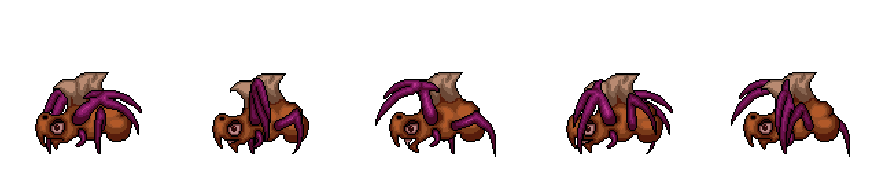

Galaxy Defenders
Your planet is under attack by aliens! Place your defenders and eliminate the aliens before they can take over. Galaxy Defenders is 2-D tower defense game that encourages the player to make strategic decisions.
Inspiration & Foundation
 Wanting to take my web development skills to the next level, I
decided to learn JavaScript in-depth. I felt that a strong
understanding of javascript was essential for developing any
website, so I started creating Galaxy Defenders through an online
JavaScript game tutorial by
Franks Laboratory
on YouTube. Like any programming tutorial that I follow, I take the
fundamental part of the project, learn from it, then start making
the code and project my own. So, the beginning of what I will be
discussing on this page is what I learned from the tutorial, but I
refined and organized the code later on to help myself expand and
build the video game as my own.
Wanting to take my web development skills to the next level, I
decided to learn JavaScript in-depth. I felt that a strong
understanding of javascript was essential for developing any
website, so I started creating Galaxy Defenders through an online
JavaScript game tutorial by
Franks Laboratory
on YouTube. Like any programming tutorial that I follow, I take the
fundamental part of the project, learn from it, then start making
the code and project my own. So, the beginning of what I will be
discussing on this page is what I learned from the tutorial, but I
refined and organized the code later on to help myself expand and
build the video game as my own.
The Basics
Shown below is the fundamentals of Galaxy Defenders. Before I can incorporate graphics and animations, I have to create boxes that act as different objects in the game. The goal of the game is to prevent the red enemy from reaching the left side of the screen. If you click on the left side of the screen, you will place a blue defender that will automatically start shooting bullets to lower the health of the red enemies. Every blue defender placed costs 100 resources, so place them carefully! You can hover your cursor over the yellow boxes to add more to your resources amount. Go ahead and play around and see if you can beat it!
Refresh your page if it says "game over" or "level complete" to play again
Adding Animations
Much easier said than done, I add animations to the defenders and enemies. Although it is difficult to implement in the JavaScript code, the concept is surprisingly simple. Take a look at this picture of the Enemy Crawler. This is the same image used in my JavaScript code to animate its movement. I section off each part of the image to make 5 frames that the code rotates through as the enemy moves. The rotation can be sped up or slowed down when its speed changes. Every character and object in this game use that same concept with its own respective frames to animate movement. A complicated character like a defender has nearly 20 frames and only certain frames play during specific actions. Play the more animated version below and see what changed!
Refresh your page if it says "game over" or "level complete" to play again
The Latest Version
The latest version of Galaxy Defenders, Alpha 1.1, is a version that is much more reflective of what I have in mind for the final version of the game. Of course, I do not believe this to be even close to the final product, but it gives a solid demonstration of what the first level might look like. Alpha 1.1 has a menu system, full-color background, animated objects, and several types of enemies, including some that shoot the defenders. Click the button below to try it out!
Closing Comments
This project has pushed me to think creatively as a programmer. I have learned a significant amount about JavaScript, and so much so that I would consider JavaScript as my strongest and most comfortable programming language. I had to apply many concepts that I learned from my Data Structures and Design course to make my code efficiently and effectively run. It also made me think about the long-term of my code and implementing designs that would be beneficial when changes are implemented in the future. Although I am proud of the current version, I hope to make a completed game. This final game will make the enemies unique, implement bosses, have either levels or an endless mode, have a store to buy powerups with, play fun music and sounds effects to back the gameplay, and have a high score board to compare players' scores.